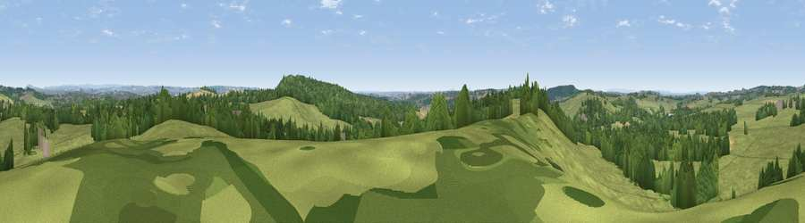

Viewpoint near Whitmore
#23255 in England · top 31% of its area beats it · near Whitmore · access?Where it is
The exact computed spot (SJ 82125 41575). Click the marker for map links.
Public access: no public right of way or access land is recorded at this exact spot — it may be on private land. Computed from Natural England's CRoW access layer and OpenStreetMap rights of way — not the legal definitive map. Always verify locally.
The view, rendered

A 360° render of this exact spot computed from the terrain model, tree cover and land cover — summer colours, afternoon light, calibrated against photographs of famous viewpoints. Real trees, hedges and buildings will differ in detail.
The panorama
Grey silhouette: terrain skyline in each direction (720 bearings, Earth curvature and refraction included). Dashed green: skyline with trees (+15 m) and buildings (+8 m) as obstacles. Blue strip: how far the ground is visible on each bearing.
Where the view opens
Wedge length = distance to the farthest visible ground on that bearing (vegetation-aware). Rings at 10, 25 and 50 km.
What fills the view
68% grassland · 25% woodland · 4% cropland · 2% built-up
Angular shares of the visible panorama (visual magnitude), not map area. Landscape diversity 0.37 (0–1 Shannon).
Key numbers
More beautiful places nearby
The staircase of upgrades: each row has a higher view potential than everything closer. Driving times are estimates from straight-line distance, calibrated against real road routing — check an actual route before setting out.
| Place | Direction | Drive | Score |
|---|---|---|---|
| Viewpoint near Whitmore | E · 2 km | ~5 min | 55.0 |
| Viewpoint near Beech | SE · 4 km | ~9 min | 62.9 |
| Viewpoint near Madeley Heath | NNW · 6 km | ~13 min | 65.4 |
| Viewpoint near Madeley | WNW · 6 km | ~14 min | 66.7 |
| Bignall Hill | N · 10 km | ~19 min | 75.2 |
| Viewpoint near Mow Cop | NNE · 16 km | ~28 min | 80.2 |
| Viewpoint near Harthill | WNW · 34 km | ~52 min | 80.5 |
| Viewpoint near Little Wenlock | SSW · 38 km | ~57 min | 84.2 |
52.97123, -2.26762 · source: screening · position refined by local search. Computed location — check access rights before visiting.